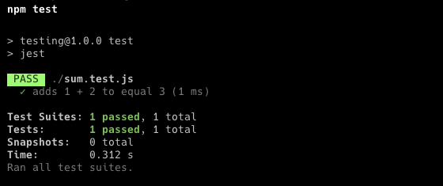

Testing in JavaScript
Testing in Javascript can be done on your own, by writing application-specific tests to ensure your code is working the way you want it to or, it can be done with a testing library that can help remove some of the extra code.
Testing is usually done at a library level if you make a custom library for example named sum.js the best way to manage your test would be to put them into a sum.text.js file. This method of storing your tests removes the testing part of your application from the rest of it and makes sure none of the tests get bundled and sent to the client.
Installing Jest
1npm install --save-dev jest
Building tests with Jest
Jest is one of the most popular testing libraries out there and is one of my favorites to use. Jest makes writing tests easy by using an almost plain English syntax like below.
1test("adds 1 + 2 to equal 3", () => {
2 expect(sum(1, 2)).toBe(3);
3});
This is a test for a function that adds two numbers called sum. We first define the test inside of the test function. The first argument is the text that displays when the function passes the test. The next argument is the function to run during the test, inside this function we use the Jest syntax to configure the test. expect is the main function where we put the sum function with test parameters. Then off of that function, we are expecting the sum function when giving the parameters 1 and 2 to be 3. All of Jest's testing criteria are written this way making the experience super easy to get started with.
To get a full list of all of the matches visit the jest docs here
Running tests
To set up Jest to run tests first you will need to edit your project's package.json file and add the test script. Most package.json files include a test script like below.
1"scripts": {
2 "test": "echo \"Error: no test specified\" && exit 1"
3 },
to get Jest running change it to look like this:
1"scripts": {
2 "test": "jest"
3 },
To run the tests run npm test in a terminal and the output will look something like this:
